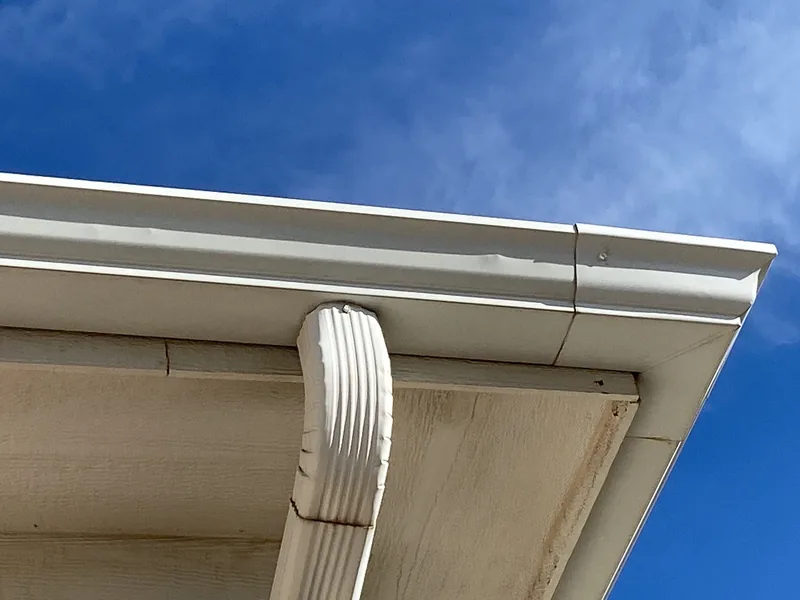

Roofing in Knoxville, TN
Emergency roof repair and storm damage in Knoxville
Water through the ceiling, a limb on the roof, shingles in the yard. Call the 24-hour line at (865) 830-8126. The first job is to stop the water. The repair, and a claim if a storm caused it, come after.

- Family roofing company. Since 2018.
- 4,000+ projects documented. On record, job by job.
- Free inspections. Written, line-by-line prices.
- 24-hour emergency line. Leaks and storm damage, any hour.
- All of East Tennessee. Twelve counties, one phone number.
Leaking right now?
Four things to do now, then call (865) 830-8126:
- Put a bucket under the drip and move anything that can't get wet.
- If the ceiling is bulging, poke a small hole at its lowest point. The water drains into the bucket instead of bringing the drywall down.
- Take photos of the stain and anything that got wet. Your insurer may want them.
- Stay off the roof. A fall costs more than any leak.
Can't talk? Text a photo of the ceiling and your address to the same number. The emergency line runs 24 hours.

Tarp tonight, fix it right after
The first visit stops the water: a tarp, a few shingles nailed back down, a hole sealed for the night. The lasting fix comes once the roof is dry and has been seen in daylight.
If the damage sits in one area and the roof has good years left, that's a repair, and roof repair covers how it's done. If a storm hit several slopes, or the roof was near the end anyway, you'll get a replacement price next to the repair price, so you can compare.
Hail and wind damage
Hail leaves round dark spots where it knocked the granules off, plus dents in gutters, downspouts and roof vents. The slopes that faced the storm take the most hits. Wind leaves a different mark: shingles creased across the middle, or torn off along the edges and the ridge.
Big storms do reach us: the National Weather Service rated the August 7, 2023 tornado in Knox County an EF-2. Most damage is smaller, like hail that bruises a back slope nobody sees from the driveway.

Tarping, and what goes on the roof
A tarp keeps the water out until the repair. A good one runs up and over the ridge so rain can't get under its top edge, and it's held down with wood strips screwed to the deck, never nails punched through the plastic.
The lasting repair uses matched shingles, ice and water shield and fresh flashing where the water got in. Photograph the roof before the tarp goes on and keep receipts for anything you buy to stop the damage. Many policies pay toward it, so ask your insurer.
What moves the cost
The emergency visit is priced by what it takes to make the roof safe and dry: how steep and high it is, how big the hole is, and whether a tree has to come off first. The lasting repair is priced on its own, in writing, once the damage has been seen in daylight.
How long it takes
Tarping comes first, as soon as it's safe to be up there. Lightning and high wind keep everyone off the roof until they pass. The lasting repair follows once the roof is dry and the shingles are in. After a big storm, a good tarp buys you time to choose who does the real work.
How a claim works
The claim is yours: you file it, in your name. We document the storm damage with dated photos, write an itemized repair estimate, and meet your adjuster on the roof if you'd like us there. You pay your deductible, and we never waive it or cover it. Tennessee law bars a roofing contractor from acting as a public adjuster unless it holds a public adjuster's license (T.C.A. § 62-6-605).
If your roofing contract depends on the claim and your insurer says in writing the damage isn't covered, you can cancel until midnight of the third business day after that notice (§ 62-6-603). The whole process, step by step, is on insurance claims help.
When shingles don't match
A repair can stand out for a few reasons. Makers retire colors, and sometimes whole shingle lines, every few years. Years of sun turn a shingle a different shade from the same color fresh off the pallet.
Before a repair goes on, ask for the maker, line and color name of the shingles on your roof now, and which current color comes closest. Ask to see a sample held against the roof before it's nailed down.
After a storm, ask your insurer in writing how your policy treats repaired areas that won't match the rest of the roof. Policies differ, and a written answer is the one you can rely on.

Warranty, and the work itself
Shingles used in a repair carry their maker's warranty. Ask for our written workmanship terms with your price, and see how our crews finish a roof on the projects page.
Questions about leaks, storms and claims
After a storm, should I call my insurance company or a roofer first?
Get a free inspection first. It tells you whether there's damage worth a claim. If there is, you file it with your insurer, since it's your claim, and we can document the damage, write a scope and meet the adjuster at the house. If there isn't, you've spent an hour and nothing else.
Will my insurance pay for a replacement roof?
It depends on your policy and what caused the damage. Insurance generally covers sudden damage like hail or wind, and usually leaves out wear and age. Your insurer makes that call. What we can give your adjuster is clear, dated photos of the damage and a written scope, so the decision rests on good evidence.
Can I just text you a photo?
Please do. Text a photo of the problem (the ceiling stain, the shingles in your yard, the spot you can see from the street) to (865) 830-8126 with your address. We'll text back what it looks like and whether someone needs to come out. It's the fastest way to find out if a problem is small.
Get the damage looked at
Leaking now? Call the 24-hour line. Otherwise, four boxes and we'll call you back.
Rather talk? Call (865) 830-8126. Rather text? Send a photo.